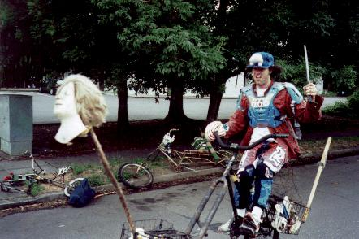
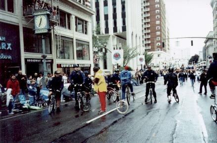
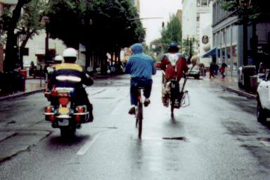

The Rose Parade.
|
It was a beautiful rainy day, time for the annual Rose Parade, and this year
we were determined to participate. We put on our finest parade
clothes and rode down to the route, where we found the streets too
clogged with onlookers to butt in. When we did find a gap in the
crowd and parked our bikes to investigate, we also found suspicious
cops who asked us what we were doing before recommending that we move the
bikes farther away.
|

|

Undaunted, we rode downtown to a later point in the route and
waited. When we saw a gap in the parade, we joined in, right
behind the scooter-riding Cub Scouts shoveling up horseshit. We had a
swell time for about three miles, smiling and waving to the crowd,
who smiled and waved back. Parade cops looked at us with puzzled
expressions, but they weren't sure whether we belonged there or not.
Eventually, however, someone must have radioed Parade High Command and
found out that we weren't in conformance with the scheduled display.
We turned a corner to find a line of foot and bike cops blocking the
route. They told us that there was to be "no Critical Mass on the
parade, guys." It might have been
fun to get taken down during the Rose Parade, in front of thousands of
people, but we just got off of our bikes when they told us to.
We rode off, glad that we weren't rotting in a small town jail cell
for parading without a permit until a drunk ACLU lawyer got us out.
|  |
We rode around downtown for a while, only to find that we
attracted a police escort wherever we went. They herded us
around a little and told us to
obey the laws of the road at all times, which was amusing
because we were on our best behavior and had been all day. |
(Return to C.H.U.N.K. Operations)
{kind=link}
{kind=link}